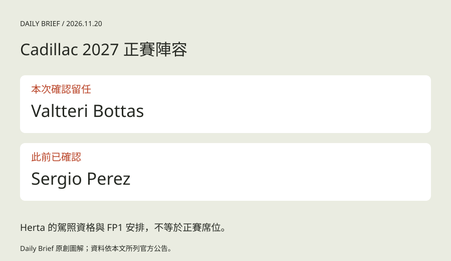

FORMULA 1 / THE ESSENTIALS
Cadillac 確認 Bottas 留任 2027，續與 Perez 搭檔
收錄於 2026-11-20 日報 · Formula 1 官方留任報導
已確認的進展
- Formula 1 11 月 19 日報導 Bottas 的 Cadillac 2027 席位已確認，結束近日留任猜測；Perez 的未來已於上月墨西哥站前確認，因此車隊延續兩名正賽車手組合。
- Bottas 表示 Herta 今年參與 FP1 及 F2、累積超級駕照積分有其原定安排，具備資格不代表車隊必須立即讓他取得正賽席位。
影響與限制
- 本次選入的是正式人事確認，不是把車手對前景的評論當成合約。亦不推論未公告的 2028 年安排、車手表現或最終賽事結果。

原文與查核
以上為整理與解讀，重要細節請回到原文核對。
- Formula 1 官方留任報導 ↗發布 2026-11-19 · 查核 2026-11-20T05:21:19+08:00